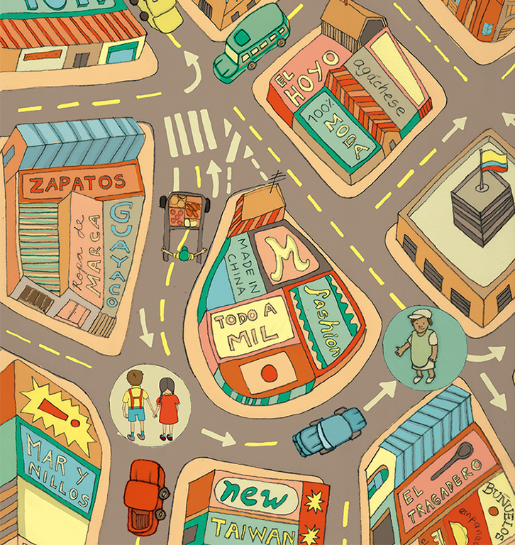

Era como si una de esas callejuelas artríticas de la ciudad se la hubiera tragado de repente. Pensé que la encontraríamos rápido porque no debía estar lejos y con eso en mente traté de calmar a mi hermana, pero lo cierto es que conforme pasaba el tiempo nos perdíamos más. Al final, con la angustia sofocándonos el cuello vimos a Socorro, una vecina barrigona amiga de mi papá que tenía un popular tragadero en el centro.
Socorro escuchó con calma lo que nos había pasado y nos agarró de las manos muy fuerte para llevarnos hasta su negocio dizque para comer un poquito y llamar a la casa a avisar dónde estábamos.